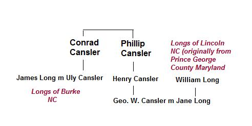

|
Cansler Family

(source: Worldconnect)
Conrad Cansler
Conrad Cansler left Lincoln county, NC around 1814. He appears
in Burke
County, NC in both the 1820 and 1830 census. By 1836, he was
in
Tennessee, as he appears on the Monroe county tax list of that
year.
Conrad was living in Monroe county in the 1840 census.
A petition was filed by James Long & Others, specifically
James and
Euly Long, Catharine Cansler, Willis and Polly Woody, Cornelius
and
Sally Welch, and Adam Barberry Nichols, as heirs of Conrad Cansler
verse William Dyer, the Administrator of John Key. "Coonrad
Cansler"
died intestate in June 1846. John Key was appointed his
administrator, but he too subsequently died. The petition
specifically claimed that John Key hadretained the distributive
share
due the heirs of Willis Allen, deceased, and wife Betsy, formerly
Betsy Cansler. The suit maintains that none of the heirs of Willis
Allen had been heard from in seven years.
In 1859, the Monroe County Chancery Court listed the following
children of "Coonrad" Cansler:
1. Euly, wife
of James Long of Union County, Georgia. (see lineage at this
website)
2. Barbara, wife of Adam Nichols of Union County, Georgia.
3. Sally, wife of Cornelius Welsh of Union County, Georgia.
4. Polly, wife of Willis Woody of Fannin County, Georgia.
5. Catherine of Monroe County, Tennessee
6. Betsy, wife of Willis Allen.
The court noted that Betsy had died in Indian Territory around
1838
and Willis had died in Texas maybe five years latter. They had
six
children, some of whom were already dead. A William A. Allen
of
Fannin County, Georgia had been in contact with John Key. In
1857, he
says that he had found the heirs in Louisiana and they intended
on
making him their agent. The final disposition of this case is
not
known.
Born around 1780, "Coonie" Cansler was the tenth
and last child of
Philip and Uly Gansler. In 1789, Conrad's father moved the family
from his first homestead, near the new town of Lincolnton, about
eight
miles east to land on Leeper's Creek. it was on this farm that
Conrad
grew up.
Phillip Cansler
Church.Philip was christened at Warlick Settlement, possibly
at Daniel's
Church.
Book 2, page 377, Lincoln County Records:
Philip Cansler, Sr. April 1854
Grandson Adolphus Cansler. Grandson William Cansler. Granddaughter
Adalade Cansler. Grandson Philip Rudasell Jr., Daughter Elisabeth
Rudasel and my son-in-law Philip Rudasel Sr.
Grandaughter Polly wife of Joseph Barrenger. Granddaughter Eliza
wife
of Eli Deal. Granddaughter Fanny wife of Jacob Deal. My five
great-grandchildren, being the children of my grandson Marcus
Rudasel,
dec'd. Granddaughter Anne Powell now deceased "who was the
wife of
Robt. Powell to her child I give one hundred dollars. Son Henry
Cansler.
Executor: son Henry Cansler
Witnesses: J.T. Alexander, W. Lander
William Long (father of Jane Cansler)
William LONG
(see lineage at this website)
Birth: 28 DEC 1792 in Prince Georges Co., MD, USA
Death: 29 AUG 1884 in Catawba, Catawba Co., NC, USA
Burial: AFT 29 AUG 1884 Catawba Methodist Cem., Catawba Co.,
NC, USA
Marriage 1 Rachel Eveline ROBINSON b: 20 JUL 1810 in Haywood
Co., NC, USA
Married: 22 JAN 1834 in Lincoln Co., NC, USA
Children
Thomas Simpson LONG b: 02 NOV 1834 in NC, USA
Jane Elizabeth LONG b: 25 MAR 1837 in Catawba Co., NC, USA
|